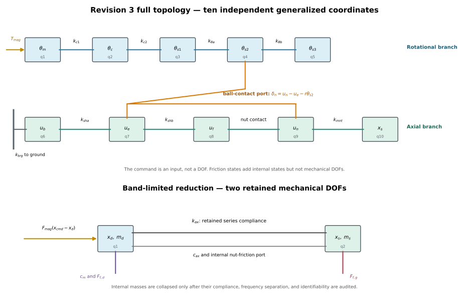
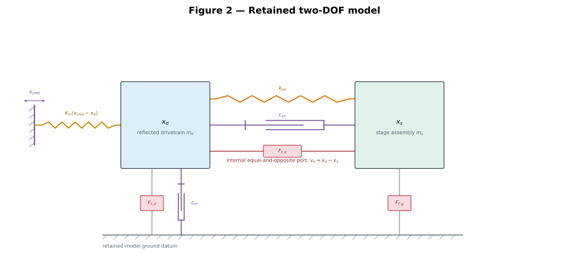
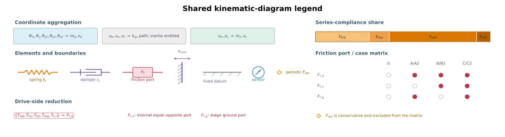
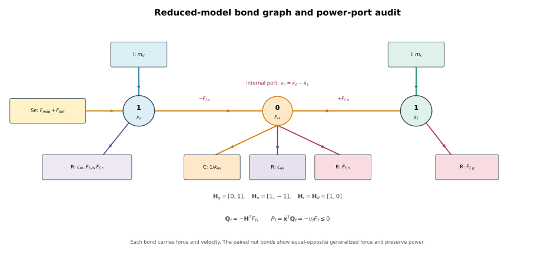

model_parameters.json through the browser’s file picker; save it beside this HTML and the Python builder so the next plot-generation run loads it. Dependent scalar values, live equations, and the live Bode panel recalculate immediately. Publication SVGs and nonlinear simulations update on rebuild.Loading values…Dynamic Modeling of a Precision Ball Screw Drive Stage
Revision 3. Full decomposed model, followed by a derived reduction.
Revision 2 asserted a lumped two-mass model as a modeling assumption. This revision builds the decomposed model first and derives the reduction as a result, with stated criteria and quantified residuals.
Rendered-document guide. The comprehensive analytical derivation and executed responses is the companion to this model specification. Amber editable cells are provisional assumptions. Browser edits persist locally and update dependent scalars, marked live equations, and live Bode plots. Run build_model_documentation.py to refresh publication SVGs, nonlinear simulations, and generated metrics.
0. Method
Three stages, in order.
- Enumerate. Every distinguishable inertia, compliance and dissipation site, with no collapses.
- Reduce. Apply three independent criteria element by element. An element is removed only if it fails all three.
- Verify. Quantify what each collapse discards, and record a fallback for each.
| # | Criterion | Question | Governs |
|---|---|---|---|
| C1 | Series compliance share | Does its deflection contribute meaningfully to the lost-motion budget? | DC accuracy |
| C2 | Mode separation | Does the mode it creates lie above the excitation bandwidth? | Dynamics |
| C3 | Structural identifiability | Does removing it merge two friction sites into one? | Parameter transfer |
C1 and C2 are independent. A stiff but light element can resonate in band while contributing negligible compliance. A soft element far above the band still contributes DC error. C3 is independent of both and is the criterion that retains the axial degree of freedom.
1. Full Degree-of-Freedom Enumeration
The intended scope was eight degrees of freedom. Honest enumeration produces ten. The two extra are the screw sections beyond the nut, retained for completeness and first in line for removal.
1.1 Topology
theta_cmd -- k_m --> theta_m -- k_c1 --> theta_c -- k_c2 --> theta_s1 -- k_th_a --> theta_s2
|
+-- k_th_b --> theta_s3 [stub]
|
TF ratio r
|
ground -- k_brg --> u_b -- k_sha(x_s) --> u_e ---------------------- k_ball --> u_n -- k_mnt --> x_s
|
+-- k_shb --> u_f [stub]The two branches couple only at the nut interface, and only through \(r = L/2\pi = 1.592\times10^{-4}\) m/rad. The smallness of this factor is what ultimately permits the reduction.
1.2 Coordinates
| # | Symbol | Body | Domain |
|---|---|---|---|
| q1 | \(\theta_m\) | Motor rotor | torsional |
| q2 | \(\theta_c\) | Coupling body (lattice) | torsional |
| q3 | \(\theta_{s1}\) | Screw, drive end | torsional |
| q4 | \(\theta_{s2}\) | Screw, at nut engagement | torsional |
| q5 | \(\theta_{s3}\) | Screw, beyond nut | torsional |
| q6 | \(u_b\) | Screw, at support bearing | axial |
| q7 | \(u_e\) | Screw, at nut engagement | axial |
| q8 | \(u_f\) | Screw, far end | axial |
| q9 | \(u_n\) | Ball nut body | axial |
| q10 | \(x_s\) | Stage assembly | axial |
Torsion and axial extension of a shaft are elastically decoupled, so \(\theta_{s2}\) and \(u_e\) are independent coordinates on the same physical body.



\(x_{cmd}\) is an imposed moving boundary, not a mechanical DOF. Friction-law memory variables are internal constitutive states and likewise do not change the mechanical DOF count. The main load path bypasses the \(u_f\) and \(\theta_{s3}\) overhang stubs.
Figure 1 uses fixed coordinate bands and the nine named physical stations. Every ground-referenced branch meets its local hatched datum; the guideway branch is joined explicitly to the terminal line leaving \(x_s\). The filled nut summing node receives \(u_e\) and \(r\theta_{s2}\) before \(k_{ball}\) connects to \(u_n\). Figure 2 shows the retained drive and stage coordinates, including the three complete parallel connections \(k_{ax}\), \(c_{ax}\), and \(F_{f,n}\).
The separate shared legend carries the color mapping, the registry-derived series-compliance bar, the case/port matrix, and the reduction map. Blue rotational coordinates collapse through \(r\) to \(m_d,x_d\); green \(u_n,x_s\) coordinates collapse to \(m_s,x_s\); the ghosted axial screw coordinates contribute the series path but no retained inertia. The identifiable drive-side force is the lump \(F_{f,d}\leftarrow\{T_{mb},T_{h1},T_{h2},T_{brg},T_{f,r}\}\).
For clarity, distributed dampers are omitted from the ten-DOF drawing: every spring \(k_j\) carries a parallel \(c_j\) in the equations. The retained figure shows \(c_{ax}\) and \(c_m\) explicitly. Detent remains a periodic conservative force and is therefore marked separately rather than included in the friction-port matrix.
1.3 Elements
Torsional compliances: \(k_m\) magnetic, \(k_{c1}\) and \(k_{c2}\) coupling half-stiffnesses, \(k_{\theta a}\) screw torsion drive-end to nut, \(k_{\theta b}\) screw torsion nut to far end.
Axial compliances: \(k_{brg}\) support bearing pair, \(k_{sha}\) screw extension bearing to nut, \(k_{shb}\) screw extension nut to far end, \(k_{ball}\) ball-raceway normal contact, \(k_{mnt}\) nut body and nut-to-stage mounting.
Friction sites (six):
| Site | Symbol | Driving velocity | Acts between |
|---|---|---|---|
| Motor bearings | \(T_{mb}\) | \(\dot\theta_m\) | rotor, ground |
| Coupling hub 1 micro-slip | \(T_{h1}\) | \(\dot\theta_m - \dot\theta_c\) | rotor, coupling |
| Coupling hub 2 micro-slip | \(T_{h2}\) | \(\dot\theta_c - \dot\theta_{s1}\) | coupling, screw |
| Support bearings | \(T_{brg}\) | \(\dot\theta_{s1}\) | screw, ground |
| Ball nut rolling | \(T_{f,n}=rF_{f,n}\) | \(r\dot\theta_{s2}+\dot u_e-\dot u_n\) | screw rotation, screw extension, nut |
| Linear guideways | \(F_{f,g}\) | \(\dot x_s\) | stage, ground |
The two hub micro-slip sites exist only because the coupling was decomposed. They correspond to set-screw hub slip on the lattice coupling and are invisible in any lumped drivetrain model.
2. Nut Interface Kinematics
The thread imposes a nominal relation between screw rotation and nut advance. The ball contact compliance is the deviation from it. Define
By virtual work, \(\partial\delta_n/\partial u_n = +1\), \(\partial\delta_n/\partial u_e = -1\), \(\partial\delta_n/\partial\theta_{s2} = -r\). Generalized forces are \(-F_n\) on \(u_n\), \(+F_n\) on \(u_e\), \(+rF_n\) on \(\theta_{s2}\).
The rolling-friction port uses the opposite relative velocity,
with \(T_{f,n}=rF_{f,n}\). Its generalized forces are \(-T_{f,n}\) on \(\theta_{s2}\), \(-F_{f,n}\) on \(u_e\), and \(+F_{f,n}\) on \(u_n\). These contributions are internal and their total power is \(-v_nF_{f,n}\).
2.1 Two distinct nut compliances
Decomposition resolves the Revision 2 double-counting question, and resolves it differently.
\(k_{ball}\) is the normal-load Hertzian axial stiffness of the ball-raceway contact. It sits in the axial load path and is conservative.
\(\sigma_{0,n}\), the presliding stiffness of the nut friction model, is the tangential traction compliance of the rolling contact. It is hysteretic and dissipative. It uses \(v_n=-\dot\delta_n\), while \(k_{ball}\) is a conservative normal-contact stiffness.
They are therefore not the same element and there is no double counting. Revision 2 resolved this by convention, defining \(k_{ax}\) as a sliding-regime stiffness. That convention is unnecessary and should be dropped.
3. Full Equations of Motion
Drive torque (switchable)
with \(k_m = N_r T_{max}\), \(N_r = 50\) for a 1.8° motor, \(\lambda_{mag},\lambda_{det}\in\{0,1\}\).
The executable nonlinear stepping cases use \(\lambda_{mag}=1\) and \(\lambda_{det}=1\). The published detent amplitude is 0.005 N·m. The global linear model excludes detent as an origin spring and has a 168 Hz commutation pole. Local detent tangents sweep that pole from about 137 to 194 Hz across one 5 µm detent period.
Torsional branch
q1, rotor
where \(c_{\theta m}=2\zeta_m\sqrt{k_mJ_\Sigma}\). This phenomenological damping prevents a lossless drive oscillator. The requested executed value is \(\zeta_m=0.10\). Driver mode and system identification are still required.
q2, coupling
q3, screw drive end
q4, screw at nut
q5, screw beyond nut
Axial branch
q6, screw at bearing
q7, screw at nut
q8, screw far end
q9, nut body
q10, stage
Structural observations
The mass matrix is diagonal in this coordinate set. The main load path is a chain with two overhang stubs: \(\theta_{s3}\) on \(\theta_{s2}\) and \(u_f\) on \(u_e\). The transformer creates the only mixed rotational-axial coupling, at \((q4,q7)\) and \((q4,q9)\). This sparse branched structure makes element-by-element reduction explicit.
4. Common-Footing Parameter Table
4.0 Executable defaults
The following cells show the executable component values. Reflected mass and magnetic stiffness are derived outputs.
| Parameter | Executed value | Unit |
|---|---|---|
| lead \(L\) | m/rev | |
| rotor teeth \(N_r\) | – | |
| derived \(r=L/(2\pi)\) | m/rad | |
| derived reduced \(m_d\) | kg | |
| measured stage body \(m_{stage}\) | kg | |
| nut body \(m_n\) | kg | |
| derived retained \(m_s=m_{stage}+m_n\) | kg | |
| rated-current \(T_{max}\) | N·m | |
| enabled \(\hat T_{det}\) | N·m | |
| detent phase \(\phi_{det}\) | rad | |
| derived \(K_m\) | N/m | |
| local \(K_{det}(x_0)\) at the report origin; not in global \(\mathbf K\) | N/m | |
| measured upper-mode target \(f_{2,target}\) | Hz | |
| modal-calibrated \(k_{ax}\) | N/m | |
| closure-derived \(k_{ball}\) | N/m | |
| motor \(J_m\) | kg·m² | |
| coupling \(J_c\) | kg·m² | |
| complete screw length | m | |
| approximate usable screw distance | m | |
| full stage travel | m | |
| installed lead accuracy class | – | |
| screw diameter | m | |
| screw density | kg/m³ | |
| derived screw \(J_s\) | kg·m² | |
| derived screw mass | kg | |
| axial play, grade O | 0.0 | m |
| support bearing \(k_{brg}\) | N/m | |
| open-loop drive damping ratio \(\zeta_m\) | – | |
| production STEP/DIR microstep divisor | – | |
| derived STEP/DIR quantum | m |
The coupling inertia remains an estimate because the component datasheet publishes its 23.8 g mass but not its polar inertia. The model does not force the component sum to a target \(m_d\).
All compliances reflected to the linear domain via \(k_{lin}=k_{rot}/r^2\), with \(r^2 = 2.533\times10^{-8}\).
| Element | Native | Linear equiv. [N/m] | Compliance [m/N] | Share | Status |
|---|---|---|---|---|---|
| \(k_m\) magnetic | 3.0 N·m/rad | 1.184×10⁸ | 8.44×10⁻⁹ | 9.6% | 0.060 N·m at rated current |
| local \(k_{det}\) at report origin | 1.0 N·m/rad | 3.948×10⁷ | local sensitivity only | – | periodic 0.005 N·m torque enabled nonlinearly |
| coupling \(k_{c1},k_{c2}\) | 137.51 N·m/rad each | 5.43×10⁹ each | 3.68×10⁻¹⁰ series | 0.4% | 1.2 N·m/deg series |
| \(k_{\theta a}\) screw torsion | ~211 N·m/rad | 8.3×10⁹ | 1.2×10⁻¹⁰ | 0.1% | computed, \(GJ/L\) |
| \(k_{sha}\) screw axial | n/a | 6.7×10⁷ | 1.49×10⁻⁸ | 17% | computed \(EA/L\), position dep. |
| \(k_{brg}\) support bearings | n/a | 3–15×10⁶ | 6.7–33×10⁻⁸ | 76–380% | spec range, ambiguous |
| \(k_{ball}\) ball contact | n/a | unknown | unknown | ? | not estimated |
| \(k_{mnt}\) nut mount | n/a | ~1×10⁸ | 1.0×10⁻⁸ | 11% | placeholder |
| Measured total | n/a | 1.14×10⁷ | 8.77×10⁻⁸ | 100% | modal, 694 Hz |
Inertias, reflected:
| Element | Native | Linear equiv. [kg] | Status |
|---|---|---|---|
| \(J_m\) rotor | 9.0×10⁻⁷ kg·m² | 35.53 | datasheet |
| \(J_c\) coupling | 1.18×10⁻⁶ kg·m² | 46.58 | 23.8 g annulus estimate; inertia unpublished |
| \(J_{s1..s3}\) screw sum | 6.061×10⁻⁷ kg·m² | 23.93 | 8 mm steel screw, complete length 0.192 m |
| derived \(m_d\) | \(J_\Sigma=2.686×10^{-6}\) kg·m² | 106.04 | no closure target |
| \(m_b+m_e+m_f\) | 0.0758 kg | 0.0758 | three equal axial lumps |
| \(m_n\) nut body | 0.050 kg | 0.050 | provisional mass retained at the stage node |
| \(m_{stage}\) stage body | 0.355 kg | 0.355 | measured |
| derived \(m_s\) | \(m_{stage}+m_n\) | 0.405 | retained two-DOF stage-side mass |
4.1 Modal-calibrated compliance closure
The current \(k_{ax}\) is not an independent static measurement. It is obtained by inverting the two-DOF characteristic equation at the measured upper-mode target selected in the executable-default table. With the corrected 0.355 kg stage body and 0.050 kg nut, \(m_s=\) kg and \(k_{ax}=\) N/m.
The series chain is then closed by deriving \(k_{ball}\) from the remaining compliance:
| Element | Compliance [m/N] | Share of \(1/k_{ax}\) |
|---|---|---|
| \(k_{brg}=25.0\) MN/m | 4.000e-8 | 30.84% |
| \(k_{sha}=67.0\) MN/m | 1.493e-8 | 11.51% |
| derived \(k_{ball}=15.437\) MN/m | 6.478e-8 | 49.94% |
| \(k_{mnt}=100\) MN/m | 1.000e-8 | 7.71% |
| total \(1/k_{ax}\) | 1.297e-7 | 100.00% |
Conclusion. The corrected mass removes the former negative-compliance conflict. The chain now closes with a positive \(k_{ball}\), but it closes by construction because the same measured mode calibrates \(k_{ax}\). A static stiffness test or a second carriage-position modal test is still required for independent validation.
Resolving measurement: dead-weight axial loading of the stage with interferometric readout gives \(k_{ax}\) statically, independent of \(m_{eff}\). That test would replace the modal-calibration dependency rather than supplement it.
5. Reduction
5.1 Element-by-element
| Coordinate | C1 compliance share | C2 blocked freq. | C3 identifiability | Verdict |
|---|---|---|---|---|
| q1 \(\theta_m\) | drive node | n/a | carries \(T_{mb}\) | retain |
| q2 \(\theta_c\) | 0.3% | ~2.9 kHz | merges \(T_{h1}\), \(T_{h2}\) | collapse coordinate, aggregate \(J_c\) into \(m_d\) |
| q3 \(\theta_{s1}\) | 0.1% | ~6 kHz | merges \(T_{brg}\) | collapse coordinate, aggregate \(J_{s1}\) into \(m_d\) |
| q4 \(\theta_{s2}\) | 0.1% | ~6 kHz | n/a | collapse coordinate, aggregate \(J_{s2}\) into \(m_d\) |
| q5 \(\theta_{s3}\) | none | ~6 kHz | none | collapse coordinate, aggregate \(J_{s3}\) into \(m_d\) |
| q6 \(u_b\) | \(k_{brg}\), 46% | >3 kHz | none | drop mass, retain compliance |
| q7 \(u_e\) | \(k_{sha}\), 17% | >3 kHz | none | drop mass, retain compliance |
| q8 \(u_f\) | none | >3 kHz | none | drop mass and stub compliance |
| q9 \(u_n\) | \(k_{mnt}\), 11% | >3 kHz | none | aggregate \(m_n\) into \(m_s\), retain compliance |
| q10 \(x_s\) | stage node | 696 Hz | carries \(F_{f,g}\) | retain |
The rotational inertias aggregate into \(m_d\), and the nut mass aggregates into \(m_s\). The three axial screw masses are dropped. Four axial compliances remain in series even though their internal coordinates are removed. Two coordinates survive.
On C3. Collapsing q2 and q3 merges \(T_{h1}\), \(T_{h2}\), \(T_{mb}\) and \(T_{brg}\) into a single drivetrain-to-ground term \(F_{f,d}\). This is an accepted loss: none of the four is separately observable in the deployed open-loop configuration. Retaining the split of \(F_{f,n}\) from \(F_{f,g}\) is not optional, and is the sole reason a second coordinate is kept at all.
5.2 Discarded mode inventory
| Mode | Frequency | Reason for discard |
|---|---|---|
| First condensed internal mode | 1.72 kHz | 1.9× above band |
| Second condensed internal mode | 2.83 kHz | 3.1× above band |
| Remaining internal modes | >3.3 kHz | outside the comparison band |
Band of interest taken as ≤900 Hz. The nearest discarded mode now has 1.9× separation.
Audit result. The component-derived inertias and 68.75 N·m/rad series coupling stiffness place the first condensed mode at 1.72 kHz. The executable full-versus-reduced residual remains the acceptance check.
5.3 Derived reduced model
With \(\lambda_2=(2\pi f_{2,target})^2\), the modal calibration is
\(k_{ax}\) is recalculated from the retained masses, drive tangent, and modal target; \(k_{ball}\) then closes the component compliance chain. Note that \(k_{sha}\) is position dependent through the free screw length, so the local \(k_{ax}\) is position dependent away from the calibration datum. See Section 6.2.
\(K_m = k_m/r^2\) is not part of \(k_{ax}\). It grounds the drive node separately, so the two appear in series in the static stage-to-ground path.
Here \(x_d=r\theta\) is the collapsed drive coordinate. The full-model transformer output is \(u_t=u_e+r\theta_{s2}\). Also, \(F_{mag}=T_{mag}/r\) and \(F_{det}=T_{det}/r\).
This is structurally identical to the Revision 2 result. The difference is that it is now a derived object with stated provenance, a discarded-mode inventory and a failing closure check attached, rather than an assumption.
The stage end effector has one output translation, \(x_s\), but the compliant plant has two generalized coordinates. \(x_d\) is an internal reflected rotor/screw coordinate. A one-DOF lock deletes the relative 696 Hz axial mode and the modeled nut differential velocity.
5.4 Linearized modal form
The global two-DOF modes are 167.7 Hz and 695.8 Hz. The local detent tangent sweeps the lower mode from 136.9 to 193.6 Hz. The full ten-DOF global modes below 3 kHz are 166.8, 686.0, 2002.3, and 2955.5 Hz.
6. Verification and Residuals
6.1 Full-versus-reduced protocol
Simulate both models on identical input and report the discrepancy.
- Single production microstep, 312.5 nm at \(\mu = 16\), from rest.
- Bidirectional reversal at the target repeatability scale.
- Trapezoidal move over full travel with deceleration shaping.
- Frequency sweep 10 Hz to 3 kHz, drive-to-stage transfer function.
Report peak and RMS position discrepancy. Case 4 shows where the discarded modes live and tests the 3.2× separation claim empirically.
6.2 Position dependence prediction
\(k_{sha} = EA/L_{free}\) varies across travel. Holding all other budget items fixed:
| Stage position | Support-to-nut \(L_{free}\) | \(k_{sha}\) [N/m] | \(k_{ax}\) [N/m] | Predicted mode |
|---|---|---|---|---|
| 0 mm | 20 mm | 5.03×10⁸ | 1.337×10⁷ | 753.6 Hz |
| 75 mm | 95 mm | 1.06×10⁸ | 1.216×10⁷ | 718.6 Hz |
| 150 mm | 170 mm | 5.91×10⁷ | 1.115×10⁷ | 688.1 Hz |
The current illustrative datum predicts roughly 66 Hz of variation across the full 150 mm stage travel within the approximately 170 mm usable screw distance. It is falsifiable with an impact hammer at the three carriage positions. The actual bearing-to-nut offset must be measured before treating the curve as quantitative.
6.3 Fallback register
| If measurement disagrees with | Relax first |
|---|---|
| Predicted mode 2 frequency | \(k_{brg}\) contact angle assumption, then \(m_{eff}\) |
| Predicted mode 1 frequency | coupling inertia estimate, detent phase, then \(\zeta_m\) |
| Presence of a mode near 1 kHz | Coupling collapse, restore q2 |
| Position dependence of mode 2 | \(k_{sha}\) estimate, restore q6 and q7 separately |
| Hysteresis not reproduced at reversal | Hub micro-slip collapse, restore \(T_{h1}\), \(T_{h2}\) |
7. Friction Models
Both given in identical notation so the forcing terms of Section 8 are interchangeable. Each applies independently at each site, with \(v\) the site driving velocity.
7.1 Shared Stribeck attractor
7.2 Generalized Maxwell-Slip
A parallel bank of \(N\) elastoplastic elements. Element \(i\) carries force state \(F_i\), stiffness \(k_i\), normalized weight \(\nu_i\) with \(\sum\nu_i = 1\). Each element is independently stuck or slipping, giving a switched hybrid system with \(2^N\) discrete modes.
Stuck: \(\dot F_i = k_i v\), valid while \(|F_i| < \nu_i s(v)\).
Slipping: \(\dot F_i = C\!\left(\operatorname{sgn}(v) - \dfrac{F_i}{\nu_i s(v)}\right)\), reverting to stuck at velocity reversal.
This signed-attractor form is important: its equilibrium \(F_i=\operatorname{sgn}(v)\nu_i s(v)\) is stable for both velocity signs. Placing \(\operatorname{sgn}(v)\) outside the whole bracket makes the negative-velocity branch repelling.
Output: \(F_f = \sum_{i=1}^N F_i + \sigma_2 v\), with \(\sigma_0 = \sum_i k_i\) and total breakaway \(F_s\).
Elements reach their thresholds at different deflections, so the model retains non-local memory. This is the property that motivates GMS and is not reproducible with a single internal state.
7.3 LuGre and elastoplastic extension
State: \(\dot z = v - \sigma_0\dfrac{|v|}{s(v)}z\)
Output: \(F_f = \sigma_0 z + \sigma_1\dot z + \sigma_2 v\)
Elastoplastic: \(\dot z = v\left[1 - \alpha(z,v)\operatorname{sgn}(v)\dfrac{\sigma_0 z}{s(v)}\right]\), recovering LuGre at \(\alpha = 1\).
7.4 Comparison
| Property | GMS | LuGre |
|---|---|---|
| States per site | \(N\) | 1 |
| Form | switched hybrid, \(2^N\) modes | smooth ODE |
| Presliding memory | non-local | local |
| True stick | exact | only with \(\alpha\) |
| Parameters per site | \(2N+4\) | 6 |
| Integration cost | high, event detection | low |
8. Friction Site Variants
The reduced equation of Section 5.3 is unchanged. Only the forcing vector changes. Each active site takes either friction model without structural change.
| Case | \(F_{f,g}\) | \(F_{f,n}\) | lumped \(F_{f,d}\) | Purpose |
|---|---|---|---|---|
| 0 | – | – | – | Modal baseline |
| A/A2 | ✓ | – | ✓ | Guideway hypothesis |
| G/G2 | ✓ | – | – | Drive-port ablation on the same free-stage plant |
| B/B2 | – | ✓ | ✓ | Nut microslip hypothesis |
| C/C2 | ✓ | ✓ | ✓ | Combined hypothesis |
Cases with suffix 2 use the same mechanical force vector as their unsuffixed counterpart. Only the constitutive law changes from LuGre to GMS. Case 0 is always frictionless. The aggregated drivetrain port is active except in the deliberate G/G2 ablation; that numerical ablation is not an uncoupled-guideway fixture.
Case 0: \(\mathbf{f} = \begin{bmatrix} F_{mag}+F_{det} \\ 0\end{bmatrix}\)
Case A: \(\mathbf{f} = \begin{bmatrix} F_{mag}+F_{det}-F_{f,d}(\dot x_d) \\ -F_{f,g}(\dot x_s) \end{bmatrix}\)
Case G: \(\mathbf{f} = \begin{bmatrix} F_{mag}+F_{det} \\ -F_{f,g}(\dot x_s) \end{bmatrix}\)
Case B: \(\mathbf{f} = \begin{bmatrix} F_{mag}+F_{det} - F_{f,n}(\dot x_d - \dot x_s)-F_{f,d}(\dot x_d) \\ +F_{f,n}(\dot x_d - \dot x_s) \end{bmatrix}\)
Case C: \(\mathbf{f} = \begin{bmatrix} F_{mag}+F_{det} - F_{f,n}(\dot x_d-\dot x_s)-F_{f,d}(\dot x_d) \\ F_{f,n}(\dot x_d-\dot x_s) - F_{f,g}(\dot x_s) \end{bmatrix}\)
\(F_{f,d}\) is the one identifiable \(v_d\) law and includes motor-bearing, coupling-hub, support-bearing, and gross nut-rolling losses. \(F_{f,n}\) is reserved for differential contact microslip.
8.1 Executed presliding discriminator
The companion derivation includes force-instrumented nested-reversal experiments for A/A2, G/G2, and B/B2. A/A2 and the G/G2 ablation use the normal free-stage plant. The dedicated B/B2 identification fixture imposes \(x_s=0\), commands \(x_d\), and measures the nut-path reaction because the free stage otherwise provides too little relative deflection. All use production 1/16 STEP/DIR quanta and the live dwell \(\max(100\,\mathrm{ms},t_{detent},t_{axial})\). The blocked-stage B/B2 loop crosses nut yield and directly tests the \(k_{ax}\)/\(\sigma_{0,n}\) correlation; normal B/B2 plant responses remain free-stage, and the guideway-alone physical fixture has no exact simulation twin.
9. Identifiability
Single-coordinate model. A rigid kinematic lock forces \(\dot x_d = \dot x_s\), so differential microslip has \(v_n \equiv 0\). Guideway and drive drag then share one velocity. Only their aggregate is identifiable.
Two-coordinate model. Three identifiable constitutive sites use three incidence rows on two bodies:
- \(F_{f,g}\) sets absolute stage lost motion, visible to a stage-referenced measurement.
- \(F_{f,n}\) is differential microslip across \(k_{ax}\) and requires a measurement spanning drivetrain and stage pickups.
- \(F_{f,d}\) is the identifiable aggregate of all losses acting on \(v_d\); physical subcomponents cannot be separated by this model's measurements.
In a zero-velocity tangent model, \(k_{ax}\) and \(\sigma_{0,n}\) multiply the same \([1,-1]^T[1,-1]\) outer product. They are exactly correlated there. Separation requires the executed finite-amplitude, blocked-stage B/B2 reversal data, where microslip yields and dissipates while \(k_{ax}\) remains conservative.
In the deployed open-loop configuration neither the drive coordinate nor the differential deflection is measurable, so only the aggregate is observable. Identification must be performed on the instrumented testbed and the split transferred. This is the formal statement of why the differential interferometer topology is necessary rather than merely convenient.
10. Known Limitations
- Motor and screw inertias are component-derived. Coupling polar inertia remains estimated because it is not published.
- The compliance budget does not close. See Section 4.1. Unresolved, and takes priority.
- \(k_{ax}\) is carried as a scalar despite the position dependence quantified in Section 6.2.
- Carriage skirt compliance and rail bending are absorbed into the rigid stage assumption.
- Yaw, pitch and roll are not modeled. Drive axis only.
- Thermal dependence of all friction parameters is omitted.
- The installed screw accuracy class is IT3. A measured lead-error map is still missing.
- Stepper electrical dynamics omitted. Defensible below 900 RPM, not above.
- Nut friction load dependence, \(T_{f,n}\) as a function of \(|F_n|\), is written but not parameterized.
Appendix. Reduced-model bond graph

The graph is the power-domain form of the reduced friction incidence rows. The central 0-junction carries the internal axial force. Its paired bonds apply nut microslip with opposite signs to the drive and stage junctions. One identifiable drive-side drag, including gross rolling, connects to the drive junction. Thus \(\mathbf Q_f=-\mathbf H^TF_f\) and \(P_f=-v_fF_f\le0\) are visible from the connection pattern.
Nomenclature
| Symbol | Description | Units |
|---|---|---|
| \(r = L/2\pi\) | Screw transmission ratio | m/rad |
| \(L\) | Screw lead, 1 mm | m |
| \(\theta_m,\theta_c,\theta_{s1..s3}\) | Torsional coordinates | rad |
| \(u_b,u_e,u_f,u_n,x_s\) | Axial coordinates | m |
| \(u_t=u_e+r\theta_{s2}\) | Full-model transformer output at the ball contact | m |
| \(x_d=r\theta\) | Reduced coordinate after drivetrain collapse and static condensation | m |
| \(J_m,J_c,J_{s1..s3}\) | Torsional inertias | kg·m² |
| \(m_b,m_e,m_f,m_n,m_s\) | Axial masses | kg |
| \(m_d\) | Reflected drivetrain mass | kg |
| \(k_m\), \(K_m = k_m/r^2\) | Magnetic stiffness | N·m/rad, N/m |
| \(k_{c1},k_{c2}\) | Coupling half-stiffnesses | N·m/rad |
| \(k_{\theta a},k_{\theta b}\) | Screw torsional stiffnesses | N·m/rad |
| \(k_{brg}\) | Support bearing axial stiffness | N/m |
| \(k_{sha},k_{shb}\) | Screw axial extension stiffnesses | N/m |
| \(k_{ball}\) | Ball contact normal axial stiffness | N/m |
| \(k_{mnt}\) | Nut mount stiffness | N/m |
| \(k_{ax}\) | Reduced series axial stiffness | N/m |
| \(\delta_n\), \(F_n\) | Nut interface deflection and force | m, N |
| \(T_{mb},T_{h1},T_{h2},T_{brg},T_{f,n}\) | Friction torques | N·m |
| \(F_{f,g},F_{f,n},F_{f,d}\) | Guideway, axial-equivalent nut, and reduced drivetrain friction forces | N |
| \(N_r\), \(T_{max}\), \(T_{det}\) | Rotor teeth (50), peak torque, detent amplitude | –, N·m, N·m |
| \(\lambda_{mag},\lambda_{det}\) | Model switches | – |
| \(F_s,F_c,v_s,\delta\) | Stribeck parameters | N, N, m/s, – |
| \(N,\nu_i,k_i,F_i,C\) | GMS element count, weight, stiffness, state, attraction | –, –, N/m, N, N/s |
| \(z,\sigma_0,\sigma_1,\sigma_2\) | LuGre state and coefficients | m, N/m, N·s/m, N·s/m |